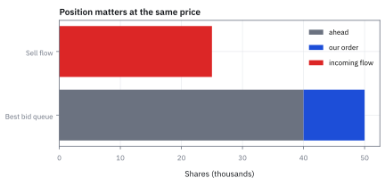
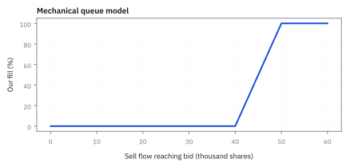
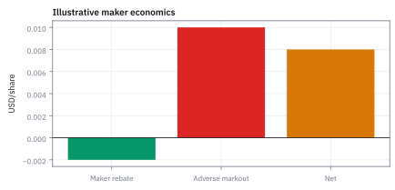
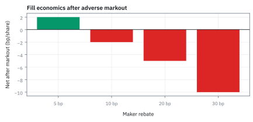

18.8 Order Book Depth, Queue Position, Maker-Taker
คำสั่ง limit ได้ค่าธรรมเนียมดีขึ้นได้ แต่ต้องยอมรับความเสี่ยงของคิวและ adverse selection
วางคำสั่งซื้อ 10,000 หุ้นต่อท้ายคิว 40,000 หุ้นที่ราคาเดียวกัน ถ้าแรงขายเข้ามา 25,000 หุ้นจะได้กี่หุ้น และถ้าแรงขายสุ่มเฉลี่ย 50,000 หุ้น โอกาสได้บ้างและได้ครบเป็นเท่าไร?
เฉลย: แรงขาย 25,000 หุ้นไม่ถึงเราเลย ได้ศูนย์ ถ้าแรงขายสุ่ม โอกาสได้บ้างคือ 44.93% ได้ครบ 36.79% ถ้าพลาดแล้วต้องไล่ราคาที่หนีไป 5 เซนต์ การรอจะคุ้มก็ต่อเมื่อโอกาสได้เกินสองในสาม ท้ายคิวแบบนี้จึงควรเคาะซื้อทันที ไม่ใช่รอ rebate
ศัพท์ที่ใช้ในหัวข้อนี้
- queue position
- ลำดับของ limit order ภายในราคาเดียวกันตามกติกา venue ใช้ประเมินว่าต้องมี marketable flow เท่าไรจึงจะได้รับ fill
- fill probability
- โอกาสที่ resting order จะ execute ภายใน horizon ที่กำหนด ใช้เปรียบ limit order กับ market order โดยรวม timing risk ไม่ใช่ดู fee อย่างเดียว
- maker-taker
- fee schedule ที่ liquidity provider อาจได้ rebate และ liquidity taker จ่าย fee ใช้คำนวณ economics ต่อ fill แต่ไม่ลบ adverse-selection risk
- adverse selection
- กรณีที่ limit order ถูก fill ในสถานะที่ข้อมูลหรือราคาเคลื่อนสวนเรา ใช้วัดต้นทุนที่ซ่อนอยู่ของการเป็น maker
- United States (US)
- ประเทศและตลาดตัวอย่างของหนังสือ ใช้กำหนด venue, currency และ trading conventions ของ case
- markout
- การวัดการเคลื่อนไหวของราคาสินทรัพย์หลังจากการจับคู่คำสั่ง ใช้วัดต้นทุน adverse selection ของ maker
- market maker
- ผู้ร่วมตลาดที่ส่งคำสั่งเสนอซื้อและเสนอขายสองฝั่งพร้อมกัน ใช้สร้างสภาพคล่องให้ตลาดและทำกำไรจากส่วนต่าง bid-ask spread
- Electronic Communication Network (ECN)
- Electronic Communication Network ระบบเครือข่ายจับคู่คำสั่งซื้อขายหลักทรัพย์อิเล็กทรอนิกส์โดยตรง ใช้เชื่อมผู้ลงทุนและลดต้นทุน spread ของตัวกลางแบบเดิม
- National Market System (NMS)
- National Market System ระบบตลาดระดับชาติของสหรัฐฯ ที่เชื่อมโยงศูนย์ซื้อขายทุกแห่งเข้าด้วยกัน ใช้รับประกันว่าคำสั่งซื้อขายจะถูกจับคู่ที่ราคาดีที่สุดเสมอ
สัญลักษณ์ที่ใช้ในหัวข้อนี้
| สัญลักษณ์ | ความหมาย | หน่วย |
|---|---|---|
| $q_0$ | displayed shares อยู่หน้าคำสั่งเรา | shares |
| $Q$ | ขนาด limit order ของเรา | shares |
| $M$ | marketable sell flow ที่มาถึงราคาเดียวกัน | shares |
| $r_m$ | maker rebate | USD/share |
| $f_t$ | taker fee | USD/share |
| $\lambda$ | อัตราการมาถึงของ market order flow ต่อหุ้น | 1/shares |
| $p_{\mathrm{fill}}$ | ความน่าจะเป็นที่จะได้รับ fill จากคิว | dimensionless |
| $s$ | bid-ask spread | USD/share |
| $\Delta P_{\mathrm{adv}}$ | adverse selection markout หรือราคาที่เคลื่อนสวนหลัง fill | USD/share |
| $D$ | adverse price drift หากคำสั่งไม่ได้รับการ fill จนหมดเวลา | USD/share |
ที่มาที่ไป: โครงสร้างค่าธรรมเนียมที่เปลี่ยนพฤติกรรมทั้งตลาด
ในทศวรรษ 1990 ตลาดอิเล็กทรอนิกส์รุ่นใหม่เริ่มใช้โครงสร้างค่าธรรมเนียมที่กลับด้านจากเดิม คือจ่ายเงินให้คนที่ตั้งคำสั่งรอ และเก็บเงินจากคนที่เข้ามาชนคำสั่งนั้น
เหตุผลคือตลาดต้องการดึงคนที่ยอมตั้งราคารอ เพราะนั่นคือสิ่งที่ทำให้มีสภาพคล่อง
ผลข้างเคียงคือมันสร้างเกมใหม่ขึ้นมาทั้งเกม คือการแข่งกันเข้าคิวให้ได้ตำแหน่งดี เพราะคิวหน้าได้เทรดก่อนและได้ค่าตอบแทน
แต่มีกับดักที่ซ่อนอยู่ คือเราจะได้เทรดพอดีตอนที่ราคากำลังจะวิ่งสวนเรา ซึ่งเป็นต้นทุนที่ไม่ปรากฏในตารางค่าธรรมเนียม และมักใหญ่กว่าค่าตอบแทนที่ได้
ประวัติศาสตร์และปัญหาจริง: กำเนิด Maker-Taker จาก Island ECN สู่กติกา Reg NMS
ในยุคก่อนปี 1997 ตลาดหุ้นสหรัฐฯ มีโครงสร้างเป็น floor specialist บน NYSE และ market maker บน NASDAQ ซึ่งกิน spread กว้างระดับหนึ่งในแปดหรือหนึ่งในสิบหกของดอลลาร์ (ประมาณ 6.25 ถึง 12.5 เซนต์) คำสั่งของนักลงทุนทั่วไปต้องยืนรอหลัง dealer เสมอ
เมื่อสำนักงาน ก.ล.ต สหรัฐฯ (SEC) ออกกฎ Order Handling Rules ปี 1997 เปิดทางให้ระบบเครือข่าย Electronic Communication Network (ECN) แข่งขันได้ Joshua Levine และ Jeffrey Citron ผู้สร้าง Island ECN จึงเจอปัญหาไก่กับไข่: ถ้าไม่มีคนตั้ง limit order รอ ตลาดก็ไม่มีสภาพคล่องให้คนส่ง market order แต่ถ้าไม่มี market order เข้ามา คนก็ไม่ยอมส่ง limit order มาทิ้งไว้
Levine แก้เกมด้วยการสร้าง model แบบ maker-taker ขึ้นมาเป็นครั้งแรก: แทนที่จะเก็บค่าธรรมเนียมทั้งสองฝั่ง ระบบกลับจ่ายเงินคืน (rebate) ให้ฝั่งที่วาง limit order เพิ่มสภาพคล่อง แล้วไปเก็บค่าธรรมเนียมที่สูงกว่าจากฝั่ง taker ที่วิ่งเข้ามากินสภาพคล่องนั้น โดยส่วนต่างกลายเป็นรายได้ของตลาด
กลไกนี้ทำให้สภาพคล่องอิเล็กทรอนิกส์เติบโตมหาศาล จนปี 2005 กฎ Regulation National Market System (Reg NMS) Rule 610 ต้องเข้ามากำหนดเพดาน fee สูงสุดของ taker ไว้ที่ไม่เกิน \$0.0030 ต่อหุ้น (30 เซนต์ต่อ 100 หุ้น) เพื่อไม่ให้โบรกเกอร์ส่งคำสั่งไปกินเงิน rebate จนละเลยหน้าที่ส่งคำสั่งที่ดีที่สุดให้ลูกค้า
คำสั่งอยู่ที่ราคาเดียวกันไม่ได้แปลว่าอยู่ในโอกาสเดียวกัน
สไลด์นิยาม limit order book ว่าคือฐานข้อมูลของคำสั่งซื้อและขายที่รออยู่ เรียงตามราคาก่อน แล้วตามเวลาที่มาถึง สมมติไม่มีใครยกเลิกข้างหน้า $q_0=40{,}000$ หุ้น คำสั่งเรา $Q=10{,}000$ หุ้น ถ้าแรงขาย $M=25{,}000$ หุ้น เราไม่ได้เทรดเลย เพราะแรงขายยังกินคิวข้างหน้าไม่หมด ราคาเดียวกันไม่ได้แปลว่าโอกาสเท่ากัน
ขั้นที่ 1 — นิยามของเงื่อนไขการได้เทรด เมื่อต้องต่อคิว
บรรทัดนี้เป็น นิยาม ของกติกาคิว ไม่ใช่ผลที่พิสูจน์ อ่านจากในออกนอก: ก้อนในสุดคือส่วนของคำสั่งที่เข้ามาซึ่งเหลือหลังกินคิวข้างหน้าหมดแล้ว ถ้าคำสั่งที่เข้ามาเล็กกว่าคิวข้างหน้า ก้อนนี้ติดลบ จึงต้องมีตัวเลือกศูนย์กันไว้ แปลว่าไม่ได้เทรดเลย ส่วนก้อนนอกจำกัดไม่ให้ได้เกินจำนวนที่เราวางไว้ ผลคือการต่อคิวทำให้ได้เทรดเป็นบางครั้ง ไม่ใช่ทุกครั้ง ซึ่งเป็นความต่างสำคัญ ระหว่างการวางคำสั่งรอกับการเข้าไปเทรดทันที
marketable flow ต้องผ่าน shares ข้างหน้า $q_0$ ก่อน ส่วนเกินจึงเริ่มกิน order เรา และ fill ถูกจำกัดไม่เกิน $Q$ shares
ขั้นที่ 2 — ตัวอย่าง queue
แทนตัวเลขจริงเพื่อดูว่าอยู่ท้ายคิวแล้วมีโอกาสได้เทรดแค่ไหน
sell flow 25,000 shares ยังไม่ถึงตำแหน่งเรา จึงไม่มี fill แม้ best bid ไม่เปลี่ยน
ไล่ flow สามระดับ: $M=40{,}000$ ให้ $\max(0,40{,}000-40{,}000)=0$ ยังไม่โดนเรา $M=45{,}000$ ให้ $\min\{10{,}000,\ 5{,}000\}=5{,}000$ ได้ครึ่งเดียว $M=50{,}000$ ให้ $\min\{10{,}000,\ 10{,}000\}$ ได้ครบ ระหว่าง 40,000 ถึง 50,000 fill โตเป็นเส้นตรงจากศูนย์ถึงเต็ม ใต้ 40,000 ไม่มีอะไรเลยไม่ว่าจะรอนานแค่ไหน
ขั้นที่ 3 — นิยามของบัญชีค่าธรรมเนียมต่อหุ้นที่ได้เทรด
สองก้อนนี้เป็น นิยาม ของเครื่องหมายที่ใช้ในบัญชี ไม่ใช่ผลที่พิสูจน์ การวางคำสั่งรอได้เงินคืน จึงใส่เครื่องหมายลบเพราะมันลดต้นทุน ส่วนการเข้าไปเทรดทันทีต้องจ่าย จึงเป็นบวก จุดที่ต้องระวังคือเงินคืนนั้นเล็กเมื่อเทียบกับความเสียหายถ้าราคาวิ่งสวนหลังได้เทรด และมันเกิดเฉพาะตอนที่ได้เทรดเท่านั้น ซึ่งขั้นที่ 1 บอกแล้วว่าอาจไม่เกิดเลย การเทียบสองอย่างนี้ต้องทำพร้อมกับโอกาสได้เทรด ไม่ใช่เทียบค่าธรรมเนียมอย่างเดียว
maker rebate ลดต้นทุนจึงใส่เครื่องหมายลบ ส่วน taker fee เพิ่ม cost;
ทั้งสองหน่วย USD per share และต้องเทียบกับ spread, fill probability และ future markout
ตัวเลขของภาพ 18.8c: rebate \$0.002 ต่อหุ้น แต่ถ้าราคาวิ่งสวน 0.010 หลัง fill ผลสุทธิต่อหุ้นที่ได้ fill คือ $0.002-0.010=-0.008$ rebate ชดเชยได้แค่หนึ่งในห้าของความเสียหาย และมันเกิดเฉพาะเมื่อได้ fill ซึ่งขั้นที่ 2 บอกว่าอาจไม่เกิดเลย คนที่ข้าม spread จ่ายแน่ ๆ 0.02 บวก fee แต่ได้ของแน่ ๆ
ขั้นที่ 4 — แปลงความลึกของคิวสู่ความน่าจะเป็นที่จะได้เทรดจริง
สมการนี้สร้างสะพานเชื่อมระหว่างความลึกของคิวกับโอกาสได้เทรดจริง ในตลาดจริงคำสั่ง market order ที่เข้ามาไม่คงที่ แต่มาเป็นกระแสสุ่ม เมื่อจำลองด้วย exponential distribution จะเห็นชัดว่าตำแหน่งคิวไม่ได้ทำให้เรารอนานขึ้นแบบเส้นตรง แต่ทำให้ความน่าจะเป็นที่จะได้เทรดหดตัวลงแบบยกกำลัง
ตัวเลข 44.93% ยืนยันว่าการตั้ง limit order ที่ท้ายคิวมีความเสี่ยงที่จะไม่ได้ของเกินกว่าครึ่งหนึ่ง หากราคาวิ่งหนีไปข้างหน้า คนที่รออยู่ท้ายคิวจะตกรถทันทีและต้องไล่ซื้อที่ราคาแพงกว่าเดิม
เมื่อ sell flow สะสม $M$ มี distribution แบบ exponential ด้วยอัตรา $\lambda$ โอกาสที่จะได้ fill บางส่วนคือโอกาสที่ flow รวมจะทะลุคิวข้างหน้า $q_0$
การคำนวณผ่าน definite integral แสดงให้เห็นว่าโอกาสได้ fill ลดลงแบบ exponential ตามความลึกของคิว ยิ่งอยู่ลึก โอกาสได้ของยิ่งหดตัวลงอย่างรวดเร็ว
ถ้า sell flow เฉลี่ยคือ 50,000 หุ้น ($\lambda = 1/50{,}000$) และคิวข้างหน้ามี $q_0 = 40{,}000$ หุ้น จะได้ $\lambda q_0 = 0.8$ ส่งผลให้โอกาสได้ fill บางส่วนเหลือเพียง $e^{-0.8} \approx 0.4493$ หรือ 44.93%
และถ้าต้องการ fill ทั้งก้อน $Q = 10{,}000$ หุ้น โอกาสจะได้ครบจะลดลงเหลือ $e^{-1.0} \approx 0.3679$ หรือ 36.79% เทียบกับคนที่อยู่หัวคิว $q_0 = 10{,}000$ ที่มีโอกาสสูงถึง 81.87%
ขั้นที่ 5 — สมการต้นทุนเปรียบเทียบ Maker กับ Taker และจุดคุ้มทุน Markout
การตัดสินใจเลือกระหว่าง maker กับ taker ไม่ใช่การเลือกว่าอยากได้ rebate หรือไม่ แต่อยู่ที่การชั่งน้ำหนักสามแรง: ผลตอบแทนจากค่าธรรมเนียม, การเคลื่อนไหวของราคาหลังโดนชน (adverse selection), และความเสียหายจากการไม่ได้ของ
ผลลัพธ์นี้เตือนสติว่า rebate \$0.0020 ต่อหุ้นนั้นเล็กมากเมื่อเทียบกับ spread และ markout หากตลาดมีทิศทางชัดเจนและคำสั่งของผู้ซื้อรายอื่นกำลังกวาด order book การดันทุรังตั้ง limit order ท้ายคิวเพื่อหวังเงินคืน จะลงเอยด้วยการรับของตอนที่ราคาลงหนัก หรือไม่ได้ของตอนที่ราคาพุ่งขึ้น
$C_T$ คือต้นทุนของ taker $C_{M\mid F}$ คือต้นทุนของ maker เมื่อได้เทรด $p$ คือโอกาสได้เทรดของคำสั่งที่วางรอ $D$ คือราคาที่ต้องไล่ตามเมื่อไม่ได้ ในแถวล่างสุด $D=0.01$ ก้อนกลางตั้งสองต้นทุนให้เท่ากัน แล้วย้ายข้างหา $\Delta P^*$ ซึ่งคือราคาที่วิ่งสวนหลังได้เทรดได้มากที่สุดก่อนที่การรอจะแพ้การเคาะทันที
ต้นทุนของ taker คือการข้าม spread ครึ่งหนึ่งบวก fee เสมอ ส่วน maker ได้ส่วนลดครึ่ง spread และ rebate คืนมา แต่ต้องแบกรับราคาที่วิ่งสวนหลัง fill
เมื่อรวมความเสี่ยงที่ไม่ได้ fill เข้ามา หากคำสั่งหลุดคิวแล้วต้องตามไปเคาะขวาที่ราคาขยับหนีไป $D$ จุดคุ้มทุนของ markout จะถูกบีบให้แคบลงทันที
แทนตัวเลขจริง: spread $s = 0.02$ USD, $f_t = 0.0030$ USD, $r_m = 0.0020$ USD หากได้ fill แน่นอน ($p_{\mathrm{fill}}=1$) จุดคุ้มทุน markout คือ $0.0250$ USD ต่อหุ้น
แต่ถ้าโอกาส fill เหลือ $0.4493$ และราคาเลื่อนหนี $D = 0.0100$ USD เทอมชดเชยจะดึงจุดคุ้มทุนลงเหลือ $0.0250 - 0.0123 = 0.0127$ USD หากราคาไหลเกิน 1.27 เซนต์ การตั้งรอก็ขาดทุนกว่าการเคาะทันที
ขั้นที่ 6 — โอกาสได้ของต่ำแค่ไหนจึงไม่คุ้มรอ: จุดตัดที่สองในสาม
ขั้นที่แล้วตอบจุดคุ้มทุนตอนที่ได้ของแน่นอน ซึ่งเป็นกรณีที่ง่ายที่สุด คำถามที่ใช้ตัดสินใจจริงคือถ้าโอกาสได้ของไม่สูง จุดคุ้มทุนจะเขยิบไปทางไหน
ตัวเลขข้างล่างใช้ spread สองเซนต์ ค่าธรรมเนียมของ taker สามในพัน และ rebate ของ maker สองในพัน โดยมีต้นทุนจากการตามราคาที่หนีไปห้าเซนต์
$m(p)$ คือค่าไล่ราคาเฉลี่ยที่ต้องแบกต่อหุ้นที่ได้เทรด มันโตตามอัตราส่วนระหว่างโอกาสพลาดกับโอกาสได้ของ จุดคุ้มทุนจึงลดลงเป็นเส้นตรงตามอัตราส่วนนั้น ยิ่งมีโอกาสพลาดมากเท่าไร เงื่อนไขก็ยิ่งเข้มขึ้นเท่านั้น
แทนค่า: ที่ได้ของแน่นอน จุดคุ้มทุนคือ \$0.0250 ต่อหุ้น พอโอกาสได้ลดลงเหลือแปดในสิบ จุดคุ้มทุนลดลงครึ่งหนึ่งเป็น \$0.0125 และที่สองในสามจุดคุ้มทุนเป็นศูนย์พอดี
ต่ำกว่าสองในสาม จุดคุ้มทุนกลายเป็นลบ ซึ่งตีความว่าคำสั่งฝั่ง maker จะคุ้มก็ต่อเมื่อราคาเคลื่อนไปในทางที่ดี หลังได้ของ แต่การได้ของมักเกิดตอนราคาเคลื่อนสวนทาง นั่นคือสาเหตุที่การรอไม่คุ้ม
บรรทัดสุดท้ายแก้สมการหาจุดตัดได้สวย ๆ ว่า $p$ เท่ากับสัดส่วนระหว่างต้นทุนการตามราคา กับผลรวมของต้นทุนทั้งหมด ซึ่งใช้ได้กับตัวเลขชุดอื่นโดยไม่ต้องคำนวณใหม่ทั้งตาราง
market order, limit order, lit และ dark pool
สไลด์สรุปทางเลือกไว้สองคู่ คู่แรก market order หยิบคำสั่งที่รออยู่ตั้งแต่ราคาดีที่สุด ได้ทันที แต่ขายได้ราคาต่ำและซื้อได้ราคาสูงเพราะข้าม spread ส่วน limit order วางรอที่ราคาที่กำหนด ได้ราคาดีกว่า แต่ไม่รู้ว่าจะได้เมื่อไรและได้ครบไหม สิ่งที่ใช้ตัดสินคือความรีบ ความผันผวนของราคา และส่วนลดหรือ rebate ที่ตลาดให้คนวางรอ
คู่ที่สองคือที่ที่ส่งคำสั่ง lit pool คือตลาดปกติที่แสดงคำสั่งและราคาก่อนเทรด dark pool คือที่ที่ซื้อขายก้อนใหญ่ได้โดยไม่เปิดขนาดหรือตัวตนจนกว่าจะเทรดแล้ว ข้อดีคือไม่ดันราคาก่อนเทรดและไม่ทำข้อมูลรั่ว ข้อเสียคือไม่รู้ว่าจะได้เทรดเท่าไร
ประเด็นที่ยังเถียงกัน dark pool มีส่วนแบ่งราว 11 ถึง 12% ของปริมาณซื้อขายในบางหุ้น การดึงปริมาณออกจากตลาดเปิดทำให้ราคาที่เห็นสะท้อนมูลค่าได้แย่ลง และคนที่ได้ซื้อก้อนใหญ่ใน dark pool เจอ winner's curse คือถ้าได้ของ แปลว่าอาจดีกว่านี้ถ้าปล่อยให้คำสั่งขายนั้นไปกดราคาในตลาดเปิดก่อนแล้วค่อยซื้อ ปี 2009 SEC ออกมาตรการให้ dark pool โปร่งใสขึ้น
แล้วเอาไปใช้ทำอะไรได้จริงบ้าง
การเข้าใจกลไกคิวและค่าธรรมเนียม ตัดสินว่าจะส่งคำสั่งแบบไหน
ใช้เลือกระหว่างส่งคำสั่งให้ได้ทันทีโดยจ่ายส่วนต่าง กับตั้งรอเพื่อรับค่าตอบแทน
ใช้ประเมินว่าตำแหน่งในคิวมีค่าแค่ไหน ซึ่งเป็นสินทรัพย์ที่มองไม่เห็นแต่มีมูลค่าจริง
ใช้ออกแบบระบบส่งคำสั่งที่รักษาตำแหน่งคิว แทนที่จะยกเลิกและส่งใหม่บ่อย ๆ
Figure 18.8a — queue ที่ต้องผ่านก่อน fill

แถบนี้แสดง 40,000 shares ข้างหน้าและ 10,000 shares ของเรา; sell flow 25,000 shares จบก่อนถึง order เรา จึงเป็น zero fill ใน example
Figure 18.8b — fill fraction ตาม sell flow

กราฟ deterministic นี้ใช้ queue 40,000 และ order 10,000 shares; fill fraction เริ่มเพิ่มเมื่อ flow เกิน shares ข้างหน้า และเต็มเมื่อ flow ถึง 50,000
Figure 18.8c — rebate เล็กกว่าราคาที่เคลื่อนสวนได้ง่าย

ตัวอย่าง economics ต่อ share: rebate \$0.002 เทียบ adverse markout scenario \$0.010; รูปนี้ไม่อ้างว่าเป็น fee schedule ของ venue ใด แต่ชี้ว่าต้องวัด markout หลัง fill
Figure 18.8d — break-even markout ของ maker

maker ได้ rebate ต่อ share เฉพาะเมื่อ fill แต่ยังเสี่ยง markout หลัง fill; จุดที่ markout เท่ากับ rebate คือ break-even ก่อน spread และ fee อื่น ๆ จึงไม่ควรจัด rebate เป็นกำไรล้วน
ตัวอย่างที่สอง — เลือกคำสั่งจากงาน ไม่ใช่จาก rebate
คำถาม: ต้องปิด delta exposure ก่อนตลาดปิด แต่ limit order ที่วางไว้ยังต่อคิวอยู่ ควรรอ rebate หรือยอมจ่าย spread?
ของที่มี: ขั้นที่ 3 ถึง 6
1 ความเสียหายถ้าไม่ได้ hedge ก่อนปิดตลาด คือ $D$ ที่ใหญ่มาก
2. $D$ ใหญ่ดึงจุดตัด $p=D/(D+s+f_t+r_m)$ เข้าใกล้หนึ่ง การรอจึงคุ้มเฉพาะเมื่อแทบแน่ใจว่าได้
3 จึงใช้ marketable order และจำกัดขนาด ถ้าสัญญาณยังมีค่าอีกหลายชั่วโมงและไม่รีบ การวางรออาจเหมาะกว่า
ตรวจเองใน 10 วินาที: เทียบต้นทุนที่แย่ที่สุดของการไม่ได้ กับต้นทุนข้าม spread อย่าดู rebate บรรทัดเดียว
แปลว่าอะไร: ติดตามอัตราการได้เทรด เวลาที่รอ อัตราการยกเลิก และราคาที่วิ่งสวนหลังได้เทรด แยกตามตลาดและฝั่งซื้อขาย เพราะค่าเฉลี่ยรวมซ่อน adverse selection ได้
โค้ดตรวจคิว โอกาสได้เทรด จุดคุ้มทุน และจุดตัดสองในสาม
import numpy as np
fill = lambda Q, M, q0: min(Q, max(0, M - q0))
assert fill(10_000, 25_000, 40_000) == 0 and fill(10_000, 40_000, 40_000) == 0
assert fill(10_000, 45_000, 40_000) == 5_000 and fill(10_000, 50_000, 40_000) == 10_000
lam = 1 / 50_000 # exponential sell flow
assert abs(np.exp(-lam * 40_000) - 0.4493) < 1e-4 and abs(np.exp(-lam * 50_000) - 0.3679) < 1e-4
assert abs(np.exp(-lam * 10_000) - 0.8187) < 1e-4
rng = np.random.default_rng(0)
M = rng.exponential(50_000, 400_000)
assert abs(np.mean(M > 40_000) - 0.4493) < 0.003
s, ft, rm = 0.02, 0.0030, 0.0020
dP = lambda p, D: s + ft + rm - (1 - p) / p * D
assert abs(dP(1, 0.01) - 0.025) < 1e-12 and abs(dP(np.exp(-0.8), 0.01) - 0.0127) < 1e-4
assert abs(dP(0.8, 0.05) - 0.0125) < 1e-12 and abs(dP(2 / 3, 0.05)) < 1e-12 and abs(dP(0.5, 0.05) + 0.025) < 1e-12
assert abs(0.05 / (0.05 + s + ft + rm) - 2 / 3) < 1e-12
assert abs(0.002 - 0.010 + 0.008) < 1e-12 # rebate vs markoutโค้ดตรวจสูตรการได้เทรดเมื่อต่อคิว โอกาสได้บ้างและได้ครบเมื่อแรงขายเป็น exponential ทั้งด้วยสูตรและด้วยการจำลอง จุดคุ้มทุนของราคาที่วิ่งสวน และจุดตัดที่โอกาสได้สองในสาม
คำตอบ — ต่อท้ายคิว 40,000 หุ้น ควรรอหรือเคาะ
คำถาม: วางคำสั่งซื้อ 10,000 หุ้นต่อท้ายคิว 40,000 หุ้นที่ราคาเดียวกัน ถ้าแรงขายเข้ามา 25,000 หุ้นจะได้กี่หุ้น และถ้าแรงขายสุ่มเฉลี่ย 50,000 หุ้น โอกาสได้บ้างและได้ครบเป็นเท่าไร?
ของที่มี: ขั้นที่ 1 ถึง 6
1 แรงขาย 25,000 หุ้นน้อยกว่าคิวข้างหน้า 40,000 ส่วนที่เหลือถึงเราติดลบ จึงได้ศูนย์หุ้น
2 แรงขายสุ่มเฉลี่ย 50,000 หุ้น โอกาสทะลุคิว 40,000 คือ 44.93% โอกาสทะลุ 50,000 จนได้ครบคือ 36.79% ตามขั้นที่ 4
3. spread 2 เซนต์ taker fee 0.0030 rebate 0.0020 และถ้าพลาดต้องไล่ราคาที่หนีไป 5 เซนต์ การรอเสมอตัวที่โอกาสได้ 2/3
4. 44.93% ต่ำกว่า 2/3 จึงควรเคาะซื้อทันที
ตรวจเองใน 10 วินาที: 0.05 ÷ (0.05 + 0.025) = 2/3 และ 44.93% น้อยกว่า 66.7%
แปลว่าอะไร: rebate เล็กกว่าราคาที่วิ่งสวนได้ง่าย และได้เฉพาะตอนได้เทรด ก่อนวางคำสั่งท้ายคิวให้ประเมินโอกาสได้ก่อน ถ้าต่ำกว่าจุดตัด การรอแพ้การจ่ายส่วนต่างราคา
กับดัก: เรียก rebate ว่า profit
rebate เกิดเฉพาะเมื่อ fill และ fill อาจมาหลังราคาวิ่งสวน order book ที่เห็นเป็น snapshot ไม่รับประกัน queue เพราะ cancel, hidden order และ priority rules ต่างกันตาม venue อย่าส่ง smart order routing จาก displayed fee เพียงบรรทัดเดียว
ข้อจำกัด: วิธีนี้สมมติอะไร และของจริงเป็นอย่างไร
| เรื่อง | วิธีนี้สมมติว่า | ของจริงเป็นอย่างไร | ผลที่ตามมาเวลาใช้งาน |
|---|---|---|---|
| การได้เทรด | ได้เทรดเมื่อคิวหน้าหมด | คนอื่นยกเลิกและแทรกได้ตลอด | โอกาสได้เทรดต่ำกว่าที่คำนวณจากตำแหน่งคิวอย่างเดียว |
| การถูกเลือก | ได้เทรดแบบสุ่ม | เราได้เทรดตอนที่ราคากำลังจะวิ่งสวนเราพอดี | ค่าตอบแทนที่ได้อาจไม่คุ้มกับการขาดทุนจากการถูกเลือกแบบนี้ |
| โครงสร้างค่าธรรมเนียม | ค่าธรรมเนียมคงที่ | แต่ละตลาดต่างกันและเปลี่ยนได้ | กลยุทธ์ที่คุ้มเพราะค่าธรรมเนียมอาจไม่คุ้มทันทีเมื่อโครงสร้างเปลี่ยน |
แถวกลางเป็นความเสี่ยงหลักของการตั้งรอ และเป็นสาเหตุที่กลยุทธ์นี้ยากกว่าที่ดู
สรุปที่ใช้ได้จริง
- queue position กำหนด fill mechanics แม้ quote price เดียวกัน
- maker-taker economics ต้องรวม fill probability และ markout
- order choice ขึ้นกับ urgency และ signal horizon ไม่ใช่ rebate อย่างเดียว
- จุดคุ้มทุนของ markout ลดลงตาม (1-p)/p และเป็นศูนย์ที่ p = D/(D+s+f_t+r_m) = 2/3 สำหรับตัวเลขของหัวข้อนี้: ต่ำกว่านั้นการรอไม่คุ้ม แม้ rebate จะเป็นบวก